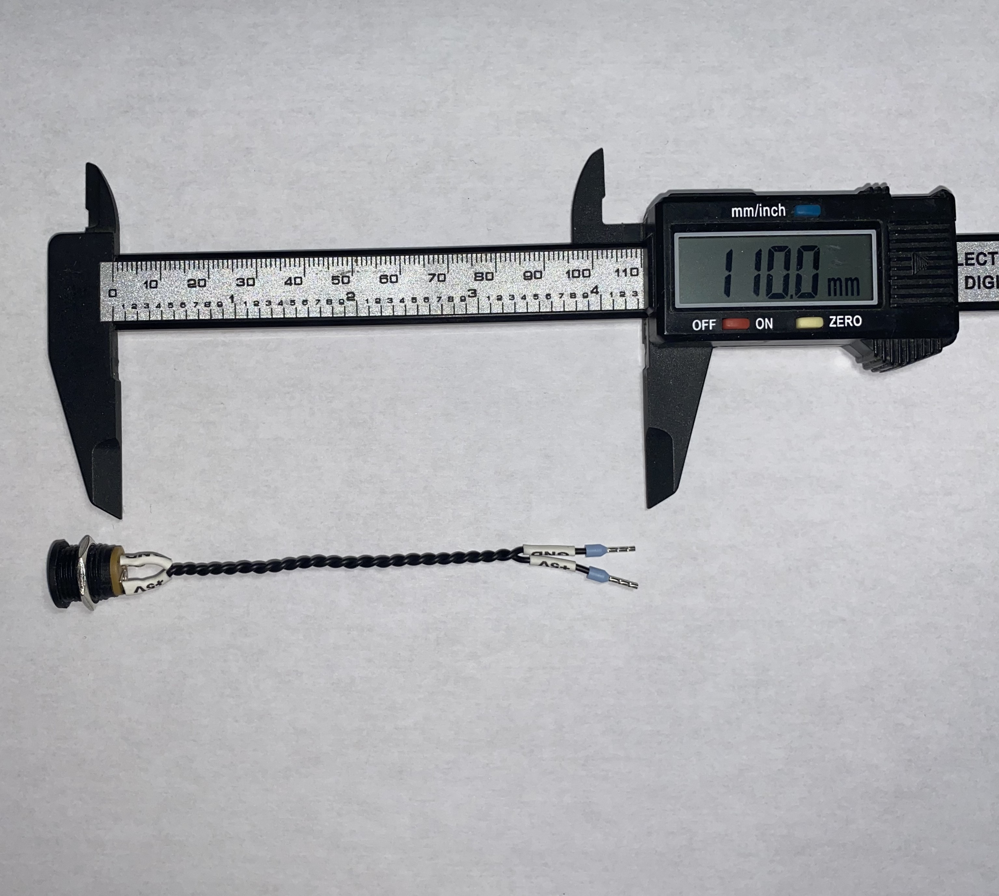

Cable Preparation
Power Connector Cable

Power Connector Cable
Cable length from the connector to the end sleeves is approximately 110mm, the cable is 0.22mm2 ( 24 AWG ), and the ends have cable end sleeves. The connector, that I used can be found here.
- Warning
- Always check the polarity with a multimeter, before connecting to the PCB! Best practice is to mark the cable with a label printer or some kind of sticker.
Humidifier Cable
Cable length from the humidifier to the end connector is approximately 140mm, the cable is 0.22mm2 ( 24 AWG ), and the end have a PHR-2 JST connector. The connector, that I used can be found here. Crimping tool for the connector, that I used can be found here.
The polarity is marked at the back side of the humidifier board. Also a little solder bridge has to be made to turn on the humidifier without button press. Humidifier module, that I used can be found here.
- Warning
- Always check the polarity with a multimeter, before connecting to the PCB! Best practice is to mark the cable with a label printer or some kind of sticker.
LED Disc Cable

Cable length from the LED disc to the end connector is approximately 160mm, the cable is 0.22mm2 ( 24 AWG ), and the end have a PHR-3 JST connector. The connector, that I used can be found here. Crimping tool for the connector, that I used can be found here.
- Note
- The cable has to be soldered to the bottom of the LED disc. The bottom side has SMD solder terminals where the cable has to be soldered. They are labeled, so it's easy to identify the wires. There is an input and an output connector, the input one has to be used.
LED disc, that I used can be found here.
LED Strip Cable

LED Strip Connector
Cable length from the LED strip to the end connector is approximately 130mm, the cable is 0.22mm2 ( 24 AWG ), and the end have a PHR-3 JST connector. The connector, that I used can be found here. Crimping tool for the connector, that I used can be found here.
- Note
- The LED strip has to be cut to length with 27 LEDs. The wires has to be soldered. If the strip made with WS2813 LEDs, the BI ( Backup Input ) pin has to soldered to ground. Also a 470uF 10V capacitor has to soldered to the input across VCC and GND on the strip to stabilize the power rail. The width of the capacitor has to be equal or less than the LED strip( whisch is 10mm ).
- Warning
- The polarity of the capacitor has to be correct, otherwise it will blow up.
LED strip, that I used can be found here.
Oled Display Cable

Oled Display Cable

Oled Display Connector
Cable length from the Oled display to the end connector is approximately 210mm, the cable is 0.22mm2 ( 24 AWG ), and the end have a PHR-4 JST connector. The connector, that I used can be found here. The display side of the cable also has a connector, it can be found here. Crimping tool for the connector, that I used can be found here.
Oled display module, that I used can be found here.
Encoder Cable

Encoder Cable
Cable length from the encoder to the end connector is approximately 200mm, the cable is 0.22mm2 ( 24 AWG ), and the end have a PHR-5 JST connector. The connector, that I used can be found here. Crimping tool for the connector, that I used can be found here.
- Note
- On the encoder side, the wires has to be soldered to the pins on the encoder module. Use heat-shrink tubes to isolate the wires from each other.
Front Endstop Cable

Front Endstop Cable
Cable length from the front endstop to the end connector is approximately 155mm, the cable is 0.22mm2 ( 24 AWG ), and the end have a PHR-2 JST connector. The connector, that I used can be found here. Crimping tool for the connector, that I used can be found here.
- Note
- Because it is a mechanical switch, the polarity on the connector doesn't matter.
Endstop switch, that I used can be found here.
Back Endstop Cable
Cable length from the back endstop to the end connector is approximately 155mm, the cable is 0.22mm2 ( 24 AWG ), and the end have a PHR-2 JST connector. The connector, that I used can be found here. Crimping tool for the connector, that I used can be found here.
- Note
- Because it is a mechanical switch, the polarity on the connector doesn't matter.
Endstop switch, that I used can be found here.
Back Motor Cable
Cable length from the motor to the end connector is approximately 105mm, the cable is 0.22mm2 ( 24 AWG ), and the end have a PHR-2 JST connector. The connector, that I used can be found here. Crimping tool for the connector, that I used can be found here.
- Note
- Because the mechanical construction of the open mechanism, the polarity on the connector doesn't matter.
DC motor, that I used can be found here.
Mechanical Assembly
Step 1 - Rubber Feet

Rubber Feet
- Precondition
- Required parts:
- box_bottom_1pcs.stl - 1pcs
- Rubber Feet - 4pcs
The four rubber feet has to glued to the bottom of the box. Rubber feet, that I used can be found here.
Step 2 - Endstop Mount Prepare
- Precondition
- Required parts:
- right_endstop_mount_1pcs.stl - 1pcs
- left_endstop_mount_1pcs.stl - 1pcs
- M3 locknut - 4pcs
Four M3 locknuts has to be pressed to the endstop mounts.
Step 3 - Endstop Mount Screws
- Precondition
- Required parts:
- M3 x 18mm Flat Head Screw - 4pcs
Four M3 x 18mm Flat Head Screw has to be inserted to the endstop mount holes.
Step 4 - Insert Bearings
- Precondition
- Required parts:
- 26 x 17 x 5mm Bearings - 4pcs
Insert four 26 x 17 x 5mm Bearings.
Step 5 - Locking Endstop Mounts
🟠 Make shore, that the holes for the endstop switches are looking inwards.
🟣 Tighten the four screws, but not so hard, the bearings has to move a bit sideways.
Step 6 - Moving Platform Knobs

Moving Platform Knobs
- Precondition
- Required parts:
- endstop_knob_2pcs.stl - 2pcs
- moving_platform_1pcs.stl - 1pcs
Insert the two knobs to the rails on the moving platform.
Step 6 - Moving Platform Knobs
- Precondition
- Required parts:
- M3 x 16mm Regular Screw - 2pcs
- M3 Nut ( Regular ) - 2pcs
🟠 Insert the two M3 nut to the back side of the moving platform.
🟣 Tighten the two screws, but not so hard, the knobs has to slide freely.
- Note
- It has to slide freely like in the video above.
Step 7 - Insert Encoder
- Precondition
- Required parts:
Insert the encoder into the moving platform.
Step 8 - Lock Encoder
- Precondition
- Required parts:
Lock the encoder shaft with a nut. It has to be tighten.
Step 9 - Slide In The Moving Platform
Slide In The Moving Platform
Slide in the moving platform to the base. The four bearings has to slide in to the sockets on the moving platform.
Step 10 - Lock Endstop Mount Screws

Lock Encoder
Lock the four endstop mount screws.
- Note
- The moving platform has to move freely forward and backward, without any side wobble.
Step 11 - Motor Shaft M3 Thread Cutting
Motor Shaft M3 Thread Cutting
- Precondition
- Required parts:
- eccetric_shaft_1pcs.stl - 1pcs
Cut an M3 thread to the hole on the side.
Step 12 - Eccentric Shaft Assembly

Eccentric Shaft Assembly
- Precondition
- Required parts:
- eccetric_shaft_1pcs.stl - 1pcs
- M3 x 12mm Flat Head - 1pcs
- 7mm OD, 3.6mm ID 8mm Height Spacer - 1pcs
Assemble the eccentric shaft as seen on the picture above.
Step 13 - Insert Motor Screws
- Precondition
- Required parts:
- motor_mount_1pcs.stl - 1pcs
- M1.6 x 5mm Flat Head Screw - 2pcs
Insert the two screws into the motor mount.
Step 14 - Lock The Motor Screws

Tighten Motor Screws
- Precondition
- Required parts:
Tighten the two screws of the motor.
Step 15 - Insert Motor Mount Nuts
- Precondition
- Required parts:
Insert the nuts to the slots on the motor mount.
Step 16 - Press The Eccentric Shaft To The Motor
Press The Eccentric Shaft
- Precondition
- Required parts:
Press the eccentric shaft to the motor shaft.
Step 17 - Insert The Motor Mount

Insert The Motor Mount
- Precondition
- Required parts:
- M3 x 10mm Flat Head - 2pcs
Insert the motor mount to the base. From the bottom insert two M3 x 10mm flat head crews. Tighten the two screws, but not so hard, the motor mount has to slide back and forward freely.
Step 18 - Insert Power Jack
- Precondition
- Required parts:
Insert the power jack to the slot on the back side.
Step 19 - Lock Power Jack
Lock the power jack with it's nut. A tweezer can be helpful for this operation.
Step 20 - Insert Endstops

Insert Endstops
- Precondition
- Required parts:
Fix the endstops with the screws. The screw has to cut thread to the plastic, it require some force.
- Note
- Check the orientation of the endstops!
Step 21 - Insert PCB Screws

Insert Endstops
- Precondition
- Required parts:
- M3 x 30mm Flat Head Screw - 1pcs
- M3 x 16mm Flat Head Screw - 3pcs
🟠 M3 X 16mm screws.
🟣 M3 X 30mm screw.
Step 22 - Insert Arduino

Insert Arduino
- Precondition
- Required parts:
Insert an Arduino UNO R3 to the base.
Step 23 - Insert Threaded PCB Spacers

Insert Threaded PCB Spacers
- Precondition
- Required parts:
- M3 x 12mm Spacer With 6mm OD - 3pcs
Insert the spacers and tighten them.
Step 24 - Insert Printed PCB Spacer

Insert Printed PCB Spacer
- Precondition
- Required parts:
- pcb_spacer_corner_1pcs.stl - 1pcs
Insert the spacer.
- Note
- Check the orientation!
Step 25 - Insert Techno Viking PCB

Insert Techno Viking PCB
- Precondition
- Required parts:
Insert the PCB to the Arduino UNO.
- Note
- Gently push the Techno Viking Board to the Arduino UNO.
Step 26 - Insert Plastic Washer
- Precondition
- Required parts:
- M3 x 0.5mm Plastic Washer - 1pcs
Insert the plastic washer to the screw.
Step 27 - Lock The PCB
- Precondition
- Required parts:
Lock the screw with a nut.
Step 28 - Insert Plastic Washer
- Precondition
- Required parts:
- M3 x 0.5mm Plastic Washer - 3pcs
Insert the remaining plastic PCB washers.
Step 29 - Lock PCB Screws

Lock PCB Screws
- Precondition
- Required parts:
- M3 x 5mm Regular Screw - 3pcs
Lock the PCB with the screws.
Step 30 - Glue Display Holder
- Precondition
- Required parts:
- display_holder_base_with_art_1pcs.stl - 1pcs
- display_holder_front_with_art_1pcs.stl - 1pcs
- Super Glue
Glue the front to the base part of the display holder.
- Note
- Check the orientation before gluing!
Step 31 - Glue Magnet Holder
- Precondition
- Required parts:
- front_panel_magnet_holder_1pcs.stl - 1pcs
- 10mm x 3mm Neodymium Magnet - 1pcs
- Super Glue
Glue the magnet into the magnet holder.
Step 32 - Insert Front Nuts
- Precondition
- Required parts:
- box_front_with_art_1pcs.stl - 1pcs
- M3 Locknut - 2pcs
Insert the nuts, to the slots on the front panel.
Step 33 - Display Holder Thread Cut

Display Holder Thread Cut
- Precondition
- Required parts:
Cut an M3 thread both sides of the display holder.
- Note
- Be gentle when cutting the thread. If you cut too fast, the plastic can melt or the cutter can break.
Step 34 - Insert Display Holder Screws
Insert Display Holder Screws
- Precondition
- Required parts:
1. Insert the display holder to the front panel.
2. Insert the screws from inside of the display holder.
🟠 M3 x 16mm screw
🟣 M3 x 8mm screw
- Note
- Check the orientation of the slot on the front panel and the slot on the display.
Step 35 - Insert Display Holder Nuts
Insert Display Holder Nuts
- Precondition
- Required parts:
Tighten the screws with an Allen Key from the inside.
- Note
- They have to be tight but not overtight! The display holder has to rotate freely.
Step 36 - Insert Display Holder Magnet
Insert Display Holder Magnet
- Precondition
- Required parts:
Insert the magnet in the slot on the display holder.
- Note
- Do NOT glue the magnet! It will be glued in the next steps.
Step 37 - Insert Display Holder Knobs
Insert Display Holder Knobs
- Precondition
- Required parts:
- short_screw_spacer_1pcs.stl - 1pcs
- long_screw_spacer_1pcs.stl - 1pcs
- M3 x 8mm Imbus Head Screw - 2pcs
Fix the knobs to the display holder.
🟠 Short spacer
🟣 Long spacer
Step 38 - Test Magnets
- Precondition
- Required parts:
Insert the magnet holder to the slot on the front panel.
- Note
- If the polarity of the magnets are correct, you should see that, the display holder closes itself. The magnet on the front panel, should push up the magnet inside the display holder.
If the magnet polarity wrong, just flip the magnet inside the display holder and try it again.
After you have tested the display holder and it's working fine, you can glue the magnet holder into the front panel, and the magnet inside the display holder.
Step 39 - Peel Off Display Cover
Peel off the protecting foil from the oled display.
Step 40 - Insert Display
Insert the oled display into the display holder.
- Note
- Check the orientation of the display cable.
Step 41 - Insert Display Clamps
- Precondition
- Required parts:
- display_clamp_2pcs.stl - 2pcs
Insert the clamps into the display holder.
Step 42 - Rotate Shaft Back
Slowly rotate the eccentric shaft to the back position.
Step 43 - Insert Front
Gently slide the front to the base.
- Note
- The tolerances are tight, but it should slide in with a bit force. If it doesn't, clean up the parts with an exacto knife.
It should look like this.
Step 44 - Lock Front
- Precondition
- Required parts:
- M3 x 12mm Flat Head Screw - 2pcs
Tighten the screws on the bottom to lock the front panel.
Step 45 - Rotate Shaft Front
Slowly rotate the eccentric shaft to the front position.
Step 46 - Push Motor Mount Front
Gently push the motor mount to the front. We have to find absolute front position.
Step 47 - Lock Motor Mount

Lock Motor Mount
Tighten the screws from the motor mount while the motor mount is pushed to the front position
If you power the motor with a bench supply( no more than 5V, and 300mA ), and crank up the voltage slowly, you should see that the mechanism opens and closes.
- Note
- Sorry for the color mismatch, the video captured from an early prototype. The expected behaviour is the same.
- If the mechanism stuck at opening, that means the motor mount is set the wrong position, it has to be adjusted. You have to push it a bit to the back.
- If the mechanism opens and closes, but the display doesn't open fully, that means the motor mount is set the wrong position, it has to be adjusted. You have to push it a bit to the front.
Step 48 - Adjust Back Endstop Knob
- Slowly rotate the eccentric shaft to the back position.
- Adjust the back endstop knob position. It has to just click when the mechanism arrives to the back position.
- Tighten the screw to fix the knob.
Step 49 - Adjust Front Endstop Knob
Adjust Front Endstop Knob
- Slowly rotate the eccentric shaft to the front position.
- Adjust the front endstop knob position. It has to just click when the mechanism arrives to the front position.
- Tighten the screw to fix the knob.
Step 50 - Connect Wires
🟠 Back endstop
🟣 Front endstop
🔵 Encoder
🟢 Motor
🟡 Input power ⚠ Check the polarity!
🔴 Oled display.
- Note
- If the oled display cable won't fit easily, it is recommended to unscrew the Techno Viking PCB to access the oled display cable connector. After the display cable connected the PCB put back to it's place.
Step 51 - Oled Cable Tie
Secure the display cable with a cable tie.
- Note
- Make shore that the cable have enough room to move back and forward after it has been tied.
The wiring should look like this.
Step 52 - Encoder Knob
- Precondition
- Required parts:
- encoder_knob_with_art_1pcs.stl - 2pcs
Insert the encoder knob to the encoder shaft.
- Note
- The encoder knob model is designed to fit multiple length encoder shafts. Maybe it can be pushed further than it should. In this case insert some cotton swabs to the hole on the knob until it's internal length is perfect.
 on Thu Sep 22 2022
on Thu Sep 22 2022